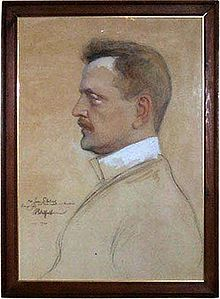

The Violin Concerto in D minor, Op. 47, was written by Jean Sibelius in 1904, revised in 1905.
It is his only concerto. It is symphonic in scope, with the solo violin and all sections of the orchestra being equal voices. An extended cadenza for the soloist takes on the role of the development section in the first movement.
